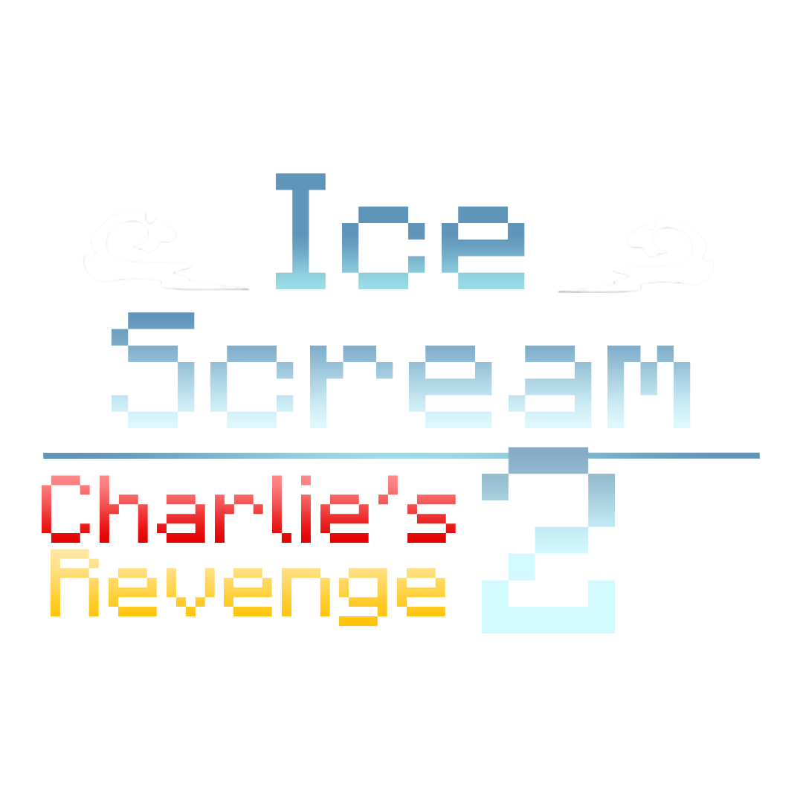

A MINECRAFT MAP BY LAINPROTV

Your favourite horror game,
rebuilt block by block.Release date: 7th September 2026
Rod’s trap
Download the map.
Minecraft Java Edition · 1.19.4 vanilla or OptiFine
Google Drive may ask you to confirm the download.
Installation steps
Download the ZIP or RAR archive.
Extract the ZIP or RAR archive.
Move the extracted world folder (named after the map or ending in “save”) into the “saves” folder inside your Minecraft game folder. The world folder should contain “level.dat”.
Move the file or folder ending in “resourcepack” or “pack” into the “resourcepacks” folder inside your Minecraft game folder.
Open Minecraft, go to Options → Resource Packs, and enable the resource pack you just installed.
Now you can play and enjoy the map :)
Use the Minecraft version listed for the map and the game folder selected in your launcher.